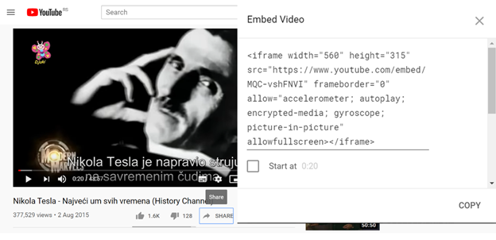

Мултимедијални садржаји¶
HTML документи омогућавају да у њих ставите мултимедијалне садржаје као што су слике, видео и аудио фајлови. На овај начин, HTML документи постају много више од страна које можете наћи у књигама. У овој лекцији ћемо научити како се прави мултимедијални садржај помоћу HTML докумената.
Слике¶
Слике су у највећем броју случајева фајлови који се чувају одвојено од HTML докумената (најћешће у неком под-директоријуму). Слике се постављају у документ на сличан начин као и линкови – помоћу елемента <img>, који у свом атрибуту src садржи име слике коју треба приказати:
<img src="NikolaTesla.jpg" alt="Nikola Tesla"></img>
Поред src атрибута, свака слика треба да има текст који ће се приказати уместо ње у случају да се слика не може учитати или приказати у прегледачу. Овај текст се ставља у оквиру alt атрибута.
HTML елемент <img> веома личи на елементе везе објашњене у претходној лекцији, уз једну разлику. Слика која се референцира се директно убацује и приказује на месту овог елемента.
Помоћу елемента <img> прегледач може да прикаже слике у различитим форматима, као што су JPG/JPEG, PNG, WEBP, SVG. На веб странама се најчешће користе JPEG формати, зато што дају најбољи однос квалитета и величине слике. PNG формат се може користити како би се приказале квалитетније слике, али често је цена спорије учитавање стране. Због брзине учитавања посебно треба избегавати формате намењене пре свега за квалитетно штампање, као што је TIF, јер су фајлови у том формату често велики. Пожељно је користити прогресивни формат слика (нпр. прогресивни JPEG) у случају да су слике веће и спорије се учитавају. Класични формати исцртавају део по део слике (у хоризонталним тракама), док прогресивни исцртају одмах целу слику али лошијег квалитета (замућено), а онда се квалитет поправља и слика се изоштрава како се учитава додатни садржај слике. У случају да се величина слике мења, пожељно је користити скалабилне (векторске) формате као што је SVG. GIF се често користи када је потребно направити неку анимирану сличицу, али је боље направити видео уместо анимиране GIF слике.
Избор формата, величине, компресије и резолуције слике је компромис између брзине учитавања и квалитета и намене слике.
Поред src и alt атрибута, слика треба да има и title атрибут, који описује слику и приказује се када неко пређе мишем преко ње. Друга, можда и важнија намена атрибута title је да претраживачи као што су Google или Bing имају на располагању описе слика, што им омогућава квалитетније рангирање резултата претраге.
Видео материјали¶
HTML језик нам омогућава да у веб страну поставимо видео материјале који се могу приказати у тој страни. Као и слике, видео фајлови се снимају одвојено од HTML докумената (нпр. видео може да буде снимљен као посебан фајл movie.mp4). У том случају је потребно у HTML документ ставити HTML елемент <video>, који ће у себи имати везу ка видео фајлу.
<video controls>
<source src="movie.mp4" type="video/mp4">
Ако видите овај текст, онда ваш прегледач не може да прикаже видео.
</video>
Елемент <video> у себи садржи HTML елемент <source>, који представља линк на видео фајл кога треба приказати. У случају да постоји више елемената <source> у оквиру истог <video> елемента, прегледач ће покушати да прикаже први, а ако не може да га прикаже онда ће прећи на следећи. Поред елемента <video> се може наћи и текст који ће бити приказан у случају да прегледач не може да покрене видео (нпр. ако фајл није на задатој локацији, ако је оштећен, или ако прегледач не може да покрене такав тип видеа). Уз видео се могу ставити и преводи помоћу <track> елемента.
Елемент <video> има још неколико корисних својстава којима се може дефинисати понашање ове контроле, као на пример:
<video controls autoplay poster="/images/naslov.jpg">
<source src="film.mp4" type="video/mp4">
Ако видите овај текст, онда видео не може да се прикаже.
</video>
Атрибутом controls се дефинише да је потребно приказати алатку са контролама за покретање и заустављање видеа, атрибут autoplay дефинише да је потребно покренути видео чим се учита, док атрибут poster представља слику која ће бити приказана пре него што се видео покрене. Више информација о овом елементу можете наћи на сајту W3 schools.
Оквири¶
Постоји још један начин да се прикажу видео фајлови - елемент <iframe>.
<iframe> је HTML елемент којим можете да укључите садржај друге HTML стране или документа у тренутну страну. На пример, у случају да желимо да у HTML документу прикажемо неки YouTube видео, можемо у нашу страну да поставимо <iframe> HTML елемент, коме је у src атрибуту уписано одакле треба да прочита видео:
<iframe src="https://www.youtube.com/embed/s9KCMku_StY?list=PLWXhVV6d5_uXFh9vOfagoU4FzJJlV3oWz">
</iframe>
Ове елементе је лако додати у HTML стране када желите да убаците у страну неки YouTube видео. Довољно је да одете до видеа који желите да убаците, одаберете Share (подели) опцију и као начин за дељење одаберете Embed (убачени) тип дељења:
{kind=link}
Све што је потребно да урадите је да овај HTML код убаците у вашу страну и YouTube видео ће бити пуштен.
Аудио материјали¶
HTML нам омогућава да поставимо аудио материјале унутар веб стране помоћу елемента <audio>, као што је приказано у следећем примеру:
<audio controls>
<source src="himna.ogg" type="audio/ogg">
<source src="himna.mp3" type="audio/mpeg">
Ако видите овај текст, онда ваш прегледач не подржава <audio> елемент.
</audio>
Елемент <audio> омогућава да пустите („одсвирате”) аудио материјале у MP3, WAV и OGG формату, мада различити прегледачи могу да имају подршку за само неке од ових формата. Због тога се у оквиру елемента <audio> обично наводи неколико аудио фајлова, како би прегледач могао да употреби фајл чији формат подржава. У случају да прегледач подржава елемент <audio>, видећете нешто као на следећој слици:
{kind=link}
Као и у случају елемента <video>, постоји неколико својстава помоћу којих можемо да задамо прегледачу како да прикаже контролу и пусти аудио запис као што су controls, којим се дефинише да је потребно приказати контроле за покретање и заустављање аудио материјала, loop, којим се дефинише да је потребно стално понављати аудио материјал, или autoplay, којим дефинишемо да аудио запис треба одмах покренути чим се садржај учита. Више информација о овом елементу можете наћи на сајту W3 schools.